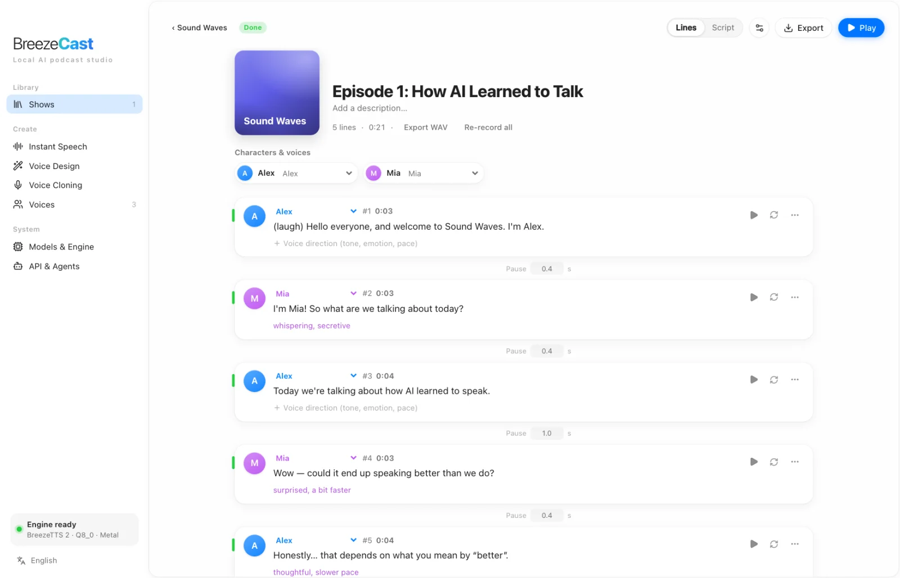

Multi-speaker scripts
Write Host: … and Guest {curious}: … lines with pauses. Edit any line, re-roll it or lock its seed, and only the changed lines are regenerated.
Write a multi-speaker script and turn it into a finished episode with BreezeTTS 2. Design voices from a sentence, clone a real voice, direct every line, then export audio with subtitles and chapters. No cloud, no API key, no upload.
Free · Code under Apache-2.0 · Model weights for research and non-commercial use

BreezeCast is built for whole episodes, not one-off clips: manage shows, script conversations, fix a single line and re-render only that line.
Write Host: … and Guest {curious}: … lines with pauses. Edit any line, re-roll it or lock its seed, and only the changed lines are regenerated.
Describe a voice in a sentence, such as “a warm young woman with a podcast-host style”. Generate several candidates and save the best as a fixed voice.
Record 3 to 20 seconds, or import WAV, MP3, M4A, AIFF or FLAC. Audition the clone before saving it. Cloning requires the speaker’s consent.
Add a voice direction like “whispering, secretive” or “thoughtful, slower pace”, and inline vocal events such as (laugh), (sigh) and (cough).
The model runs locally on Metal, Vulkan or CPU through audio.cpp. Your text, reference audio and finished episodes never leave your computer.
Automatic loudness normalization and mixing, then export M4A or WAV with SRT subtitles, chapter JSON and a transcript.
Design a voice from a description or clone one from a short recording. Name each voice after a character and it is cast automatically.
Paste or type the conversation. Direction goes in braces, pauses in angle brackets.
Host: (laugh) Welcome to Sound Waves!
Guest {curious}: Great to be here.
<pause 1s>
Guest {thoughtful, slower}: Hmm, two ways to look at it.
BreezeTTS 2 renders line by line and mixes the episode. Re-take any line you don’t like, then export audio with subtitles and chapters.
Keep every show, season and one-off episode in one library. Pick up where you left off, see which episodes have unrendered changes, and re-render only what you edited.

Switch the app language at any time from the sidebar. BreezeTTS 2 speaks Chinese and English, and mixed-language text works too.

Every feature in the UI is exposed through a local REST API that starts with the app. Install the bundled Skill and agents such as Claude Code and Codex can script, cast, render and export a podcast for you.
# create an episode from a script, render it, export M4A BC="python3 skills/breezecast/scripts/breezecast.py" $BC status $BC episode-create --title "Episode 1" \ --script-file ep.txt --cast 'Host=Alex' $BC render e_xxx --wait $BC export e_xxx --format m4a # or call the API directly curl -s http://127.0.0.1:17860/api/v1/speech \ -H "Content-Type: application/json" \ -d '{"text":"(laugh) Hello from BreezeCast.", "instruct":"An enthusiastic young host"}'
Draft a pilot, test formats and voices, or produce a whole show without booking a studio.
Turn articles and notes into audio with consistent, reusable character voices.
Use the local REST API to add speech to your own tools and automations.
Give your agent a voice with a ready-made Skill instead of wiring up a TTS service.
| macOS | Windows | |
|---|---|---|
| System | macOS 14 Sonoma or later | Windows 10 1903 or later, or Windows 11 (x64) |
| Inference | Apple Silicon (M1 or later) with Metal | GPUs with a Vulkan driver (NVIDIA, AMD, Intel); otherwise CPU, which is much slower |
| Memory | 16 GB or more recommended | Same; 6 GB or more of VRAM recommended with Vulkan |
| Disk | 3.8 to 7.3 GB per model (Q4_0, Q4_K, Q8_0 or BF16) | Same |
No. After you download a model once, text-to-speech runs entirely on your computer. Your scripts, voices and audio are never uploaded, and there is no account or API key.
BreezeTTS 2 speaks Chinese and English, and mixed Chinese/English text works. The app interface is available in English and Simplified Chinese.
Yes. Record 3 to 20 seconds of clean speech or import an audio file, add an accurate transcript, audition the result, then save it as a reusable voice. You must have the speaker’s consent.
On macOS: Apple Silicon (M1 or later) and macOS 14 or newer, with 16 GB of memory recommended. On Windows 10/11: a GPU with a Vulkan driver is recommended; otherwise it falls back to the CPU, which is much slower.
The BreezeCast source code is Apache-2.0. The BreezeTTS 2 model weights, and audio generated with them, are covered by the BreezeBlue Research and Non-Commercial License and are for research and non-commercial use only.
Yes. Everything in the UI is available through a local REST API, and a bundled Skill lets agents such as Claude Code and Codex write scripts, pick voices, render and export episodes.
Download BreezeCast, grab a model, and turn a script into a podcast on your own machine.